Rekonstrukcja.
Co to jest właściwie rekonstrukcja historyczna?
Rekonstrukcja historyczna - takim terminem dość powszechnie określa się działania, podczas których ich uczestnicy, czyli rekonstruktorzy w oryginalnym lub też ponownie wytworzonym na podstawie planów oryginału wyposażeniu, odtwarzają konkretne zdarzenia z najdalszej lub współczesnej historii. Często również spotkać możemy odtwarzanie warunków bytowych w danym okresie historycznym na tzw. dioramach. Początki działalności rekonstruktorów miały miejsce już w starożytności, gdy to Rzymianie odtwarzali bitwy morskie lub lądowe w Koloseum. Przez lata ruch odtwórców ewoluował i od czasów pierwszych inscenizacji bitew organizowanych w XVII wiecznej Anglii do teraz, przeszedł wiele istotnych zmian, ale istota pozostaje ta sama. Przy każdym projekcie szczególną uwagę zwraca się na dbałość o zachowanie realiów danego okresu. Współcześnie ruch odtwórców historii nabrał rozpędu ponownie w latach 90tych i prężnie się rozwija, również w naszym kraju, gdzie dominuje obecnie trend na odtwarzanie 2 Wojny Światowej a dokładniej kampanii wrześniowej. Rekonstrukcja, dla osób ją tworzących jest czymś więcej niż tylko “przebieraniem się”.
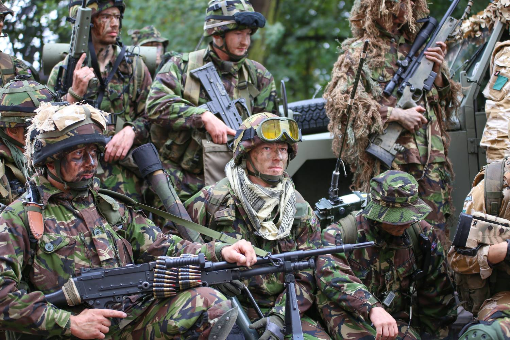
Można rzec, że jest to właściwie styl życia. Pieniądze inwestowane w sprzęt i uposażenie często niejedną osobę przyprawiłyby o zawrót głowy, ale o tym w kolejnej części artykułu. W tym artykule również skupię się na bardziej nowoczesnej tematyce w rekonstrukcji, ponieważ takowa świetnie wpasuje się w całokształt militarnego charakteru tej strony.
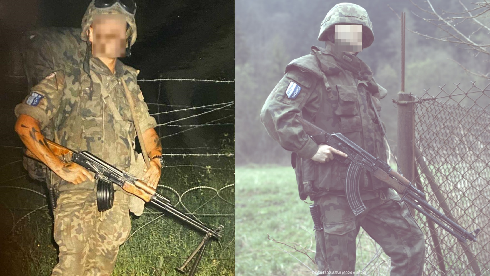
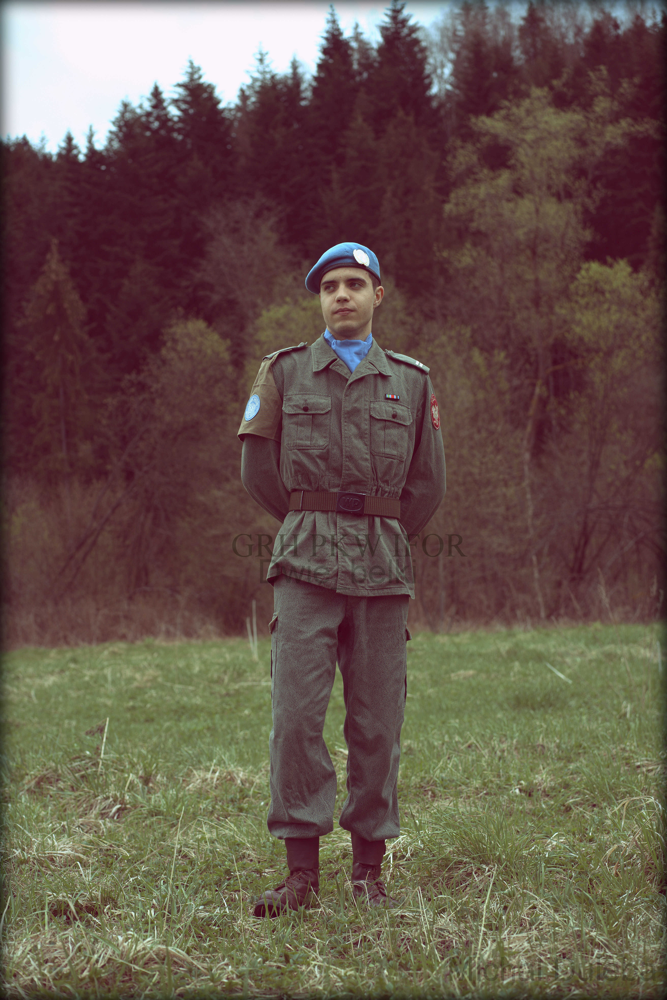
Skąd bierze się “arsenał” rekonstruktorów.
Aby rozpocząć przygodę z rekonstrukcją należy zaopatrzyć się w materiały, które dostarczą wymaganej wiedzy. Dokładne odtworzenie sylwetki żołnierza Wehrmachtu, średniowiecznego woja czy też współczesnego SEALS-a to bardzo żmudna i długa ścieżka. Literaturę wymaganą do rozpoczęcia przygody jak i pogłębiania wiedzy o danej sylwetce zdobyć można w zwykłej księgarni lub targu. Co poniektórzy rekomendują również poszukiwanie odpowiednich publikacji w sieci. To metoda równie efektywna. Co ciekawe rekoni (Tak potocznie mówią na siebie osoby z tego środowiska) wyszukują również niespisane informacje, bowiem starają się dotrzeć do weteranów czy też osób, które specjalizują się w danym temacie. Po zebraniu wiedzy książkowej przychodzi czas na pierwsze “Konkretne zakupy”. Szpej w slangu odtwórców to nic innego jak całość umundurowania i wyposażenia używanego na pokazach i tzw. Dioramach (Stanowiskach, gdzie rekonstruktorzy prezentują się i swoje kolekcje). Zakup pierwszej zbroi, munduru czy też innego odzienia szytego na miarę lub rzadko spotykanego to spory wydatek. Cena munduru drugo-wojennego to od 1000 złotych w górę, zbroi parę tysięcy a szytego galowego munduru ze sukna... Ponad kilkadziesiąt. Początki bywają bardzo trudne pod tym względem, szczególnie, że nie każdy wie, gdzie szukać tak egzotycznych artykułów. Wyjściem są strony sklepów specjalizujących się sprzedażą, giełdy militarne, giełdy antyków oraz portale aukcyjne w Internecie takie jak np. Allegro. Myślę, że warto w tym miejscu wspomnieć o czyś takim jak koszerność (Jest to określnik informujący czy dany przedmiot nadaje się do odtwarzania wybranej sylwetki). Często drogi szpej jest koszerny a tanie zamienniki i kopie są... Do niczego. Nasuwa się wniosek, że tylko oryginał daje 100% koszerności i to jest prawie prawda. Dopiero w razie niemożności uzyskania oryginału sięga się po kopie, które nie raz są lepiej wykonane niż ich prekursor.
Przykładem mogą być tutaj drugo-wojenne mundury. Sprzętu niejednokrotnie jest tak dużo, że nie sposób jest pomieścić go w szafie a potem i w całym pokoju. To rzecz, na którą każdy rekon jest gotów a co ciekawe, nawet jej oczekuje. Poniżej zamieszczam parę linków prowadzących do miejsc skąd można pozyskać odpowiedni asortyment:
Skąd w rękach rekonstruktorów bierze się “broń”?
Wielu rekonstruktorów zajmuje się odtwarzaniem bitew i sylwetek żołnierzy różnych epok i formacji. Co za tym idzie muszą również wyposażyć się w “narzędzia pracy” takowych osób. Nie bez powodu w tytule artykułu zapisałem słowo broń w cudzysłowie. Bardzo rzadko widzimy w rękach odtwórcy broń palną bojową lub naostrzone jak brzytwa elementy broni białej lub obuchowej. Najczęściej w rękach odtwórcy gości wiernie wykonana replika. W przypadku broni białej są to kute przez kowali miecze. Z zamiennikami broni palnej jest jeszcze łatwiej. Repliki ASG są możliwe do kupienia powszechnie w Internecie, choć jakość co poniektórych wzbudza pewne wątpliwości. Broń treningowa jest pozbawiona cech użytkowych a sama nie odbiega w zasadzie niczym pod broni palnej bojowej (Osobiście jest to najlepszy wybór do rekonstrukcji). Spotkać można także drewniane i tekturowe modele oraz odlewy, ale to już rzadki widok. Zwróćmy również uwagę, że elementy broni białej takie jak np. Bagnet można z łatwością zakupić na giełdach militarnych a nawet w sklepach internetowych.
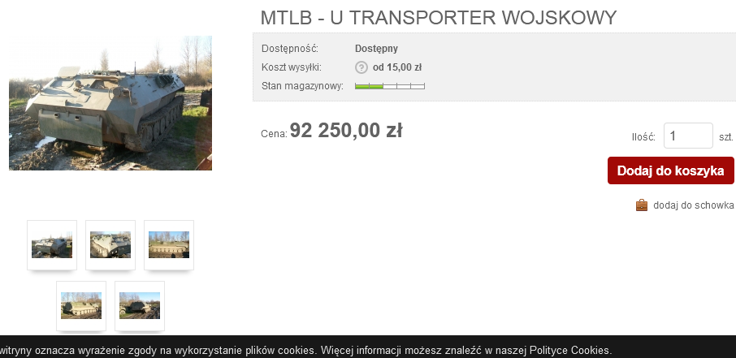
W każdym wypadku to, co mają rekonstruktorzy w rękach, jest w pełni legalne i zazwyczaj bezpieczne. Na większość z tych atrybutów nie jest wymagane żadne pozwolenie. Co więcej zakazane jest wnoszenie broni palnej bojowej np. Na tereny muzeów i innych obiektów publicznych. Polecam również odzwiedzić: Army-bazar, Okop oraz Taiwangun.
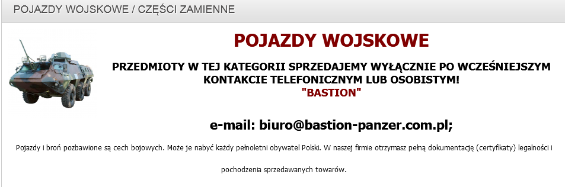
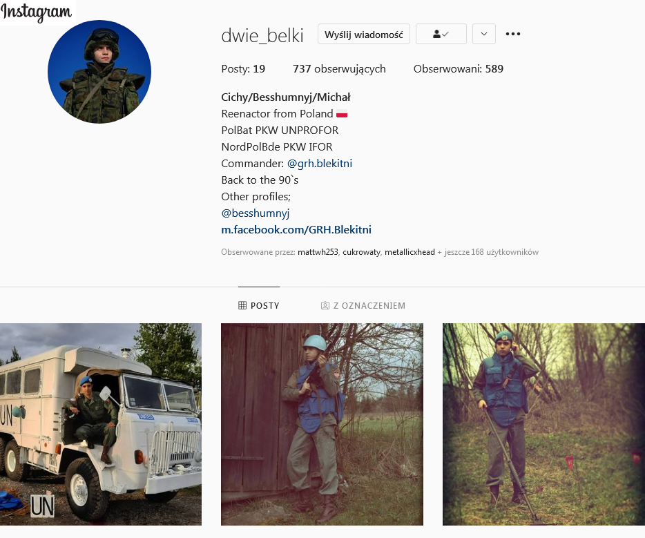
Używanie pojazdów wojskowych – Jak zasiąść za sterami czołgu?
Zdawać by się mogło, że monopol na pojazdy wojskowe należy tylko i wyłącznie do służb mundurowych, ale to nie do końca prawdziwe twierdzenie. Co ciekawe, każda osoba posiadająca uprawnienia takie jak prawo jazdy kat. B lub C może sprawić sobie wojskową ciężarówkę, terenówkę a przy odpowiednich formalnościach nawet i własny czołg! W Polsce funkcjonuje wiele stowarzyszeń takich jak np. Mała Armia Grupa Śląsk, która zajmuje się od wielu lat zbieraniem i uruchamianiem pojazdów wojskowych państw byłego Układu Warszawskiego. Wystawiają je na różnego typu imprezach. Czołgi, wozy pancerne, pojazdy gąsienicowe... To wszystko znajduje się w ich rękach a co najważniejsze, żaden z członków nie jest w służbie czynnej a pojazdy zarejestrowane są jako cywilne. (Tu ciekawostka, pojazdy wojskowe w Polsce rejestrowane są od pierwszej litery U, a pojazdy o trakcji gąsienicowej UT). Procedura zakupu jest bardzo podobna jak broni pozbawionej cech użytkowych. może zakupić każdy pełnoletni obywatel Polski. W celu weryfikacji pełnoletniości, zazwyczaj należy przesłać skan lub zdjęcie dowodu osobistego. Kupujący ma obowiązek zarejestrować każdy egzemplarz broni w Wydziale Postępowań Administracyjnych (WPA) na Policji w ciągu 5 dni od daty sprzedaży (wystawienia faktury). W celu uzyskania dodatkowych informacji na temat rejestracji broni sugeruje jednak kontakt z Komendą Policji odpowiednią dla miejsca zamieszkania. Prywatne pojazdy wojskowe również mogą być źródłem zarobku dla rekonstruktora. Jednorazowe przejażdżki z dużą grupą osób mogą pokryć wydatki na paliwo i ewentualne naprawy a do tego często dają dodatkowy grosz zysku. Nie zapominajmy jednak, że takie “zabawki” są bardzo skomplikowanymi pojazdami, których serwis albo będzie nasz słono kosztować, albo nie będzie możliwy. Nie znam osobiście mechanika, który naprawi czołg T-55. Części zamienne do pojazdów już nieprodukowanych są równie trudno dostępne co do parowozów. Reasumując, każdy może zakupić czołg, ale nie każdy może go utrzymać i naprawiać. Do tego jednak trzeba zgranego zespołu i pokaźnego portfela bowiem cena pojazdu gąsienicowego w Polsce to niecałe 100000 złotych.
Jeśli ktoś z was byłby zainteresowany takimi zakupami lub przejażdżką takim sprzętem, to nic prostszego. Wystarczy kliknąć w linki poniżej!
Pokazy i pikniki militarne jako miejsca pokazów.
W ciągu lata raz na jakiś czas można spotkać ogłoszenia dotyczące imprez militarnych organizowanych przez muzea lub stowarzyszenia. W slangu rekonstruktorów takie happeningi mają zbiorczą nazwę “reko” lub “Pokazy”. Nie jest tu ważne czy jest to piknik wojskowy, zlot pojazdów militarnych czy też zlot pasjonatów wojskowości. Takie rozróżnienie służy tylko zaznaczeniu, czy na danym evencie uświadczymy tzw. Ciężki sprzęt. Zazwyczaj przez cały okres trwania zlotu dostępne są takie atrakcje jak np. Przejażdżki sprzętem wojskowym (np. czołgi, transportery gąsienicowe), bazar militarny oraz wystawy sprzętu, grupy rekonstrukcyjne i dioramy. Dla wspomnianych wcześniej rekonstruktorów pokazy są miejscem, gdzie prezentują oni nabytą wiedze, zebrany sprzęt wojskowy oraz umiejętności musztry a nawet i elementy taktyki wojskowej. Ma to miejsce statycznie na dioramach lub dynamicznie podczas inscenizacji bitew.
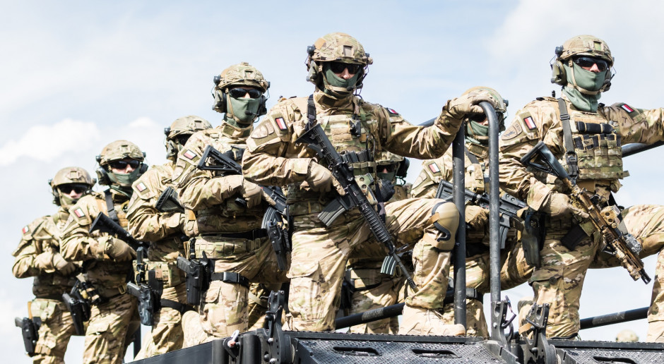
Nierzadko zloty mają charakter międzynarodowy i zjeżdżają się na nie osoby z innych krajów. Większość zlotów posiada własne strony internetowe, ale część jest również ogłaszana poprzez portale społecznościowe takie jak np. Facebook. Facebook-slaskiemanewry, Polachwaly oraz Odyseja-historyczna.
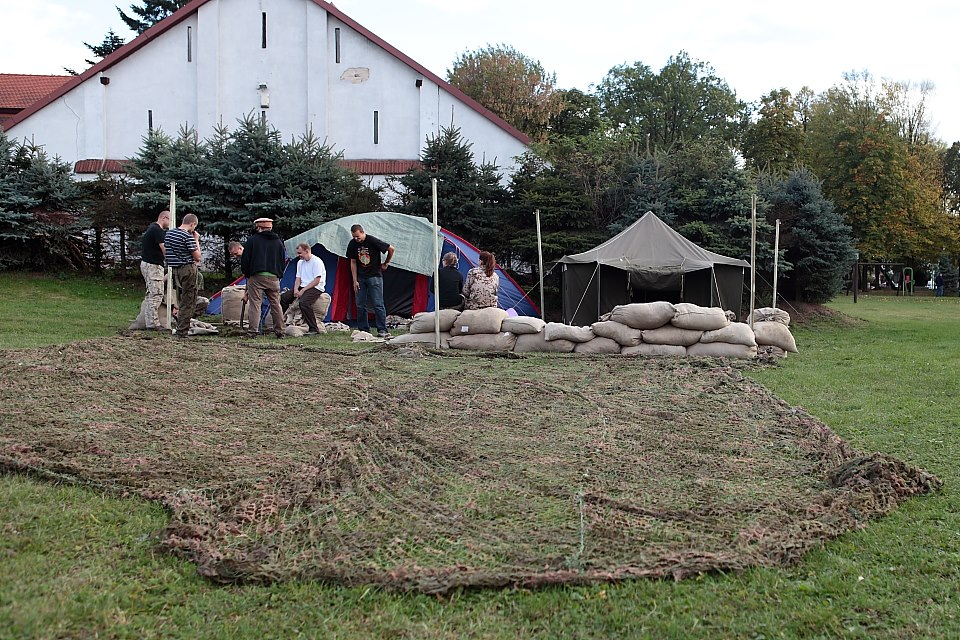
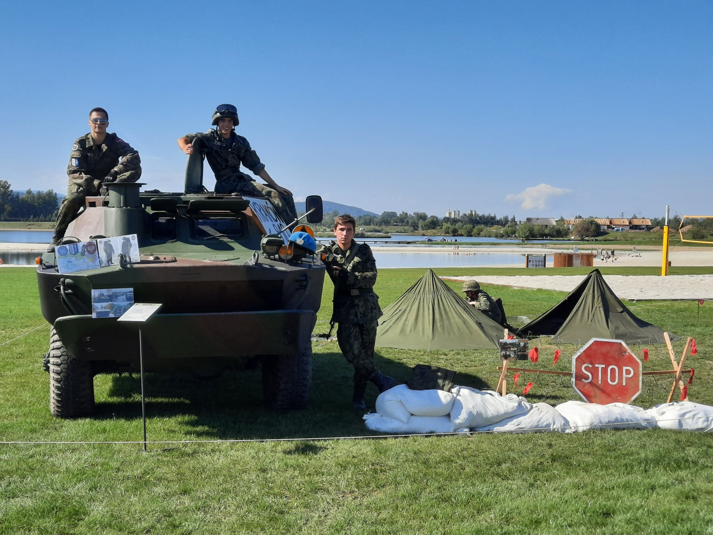
Jak założyć własną grupę rekonstrukcji historycznej?
Aby założyć własną grupę rekonstrukcyjną nie potrzeba wiele. Najważniejsza jest... Pasja! To dzięki niej zawiązuje się potrzebne znajomości do utworzenia funkcjonującego zgrupowania. Pamiętajmy, że wszystko przychodzi z czasem. Nie da się od razu zacząć być rekonstruktorem z wielką grupą podwładnych, którzy są świetnie wyposażeni oraz w miarę przeszkoleni. Tutaj taka moja rada dla wszystkich rozpoczynających „rekowanie”, warto znaleźć sobie drużynę na początek. W niej dowiecie się wszystkiego oraz zaoszczędzicie sporo pieniędzy na kupowaniu sprzętu oraz otrzymacie odpowiednie źródła, z których można czerpać wiedzę na interesujący was temat. Zakładanie grupy ma często z początku charakter nieformalny. Osoby w grupie łączy tylko wspólny cel i spisany na szybko regulamin. Dopiero z czasem takie nieformalne zgromadzenie może ewoluować w zarejestrowane stowarzyszenie lub grupę non-profit. Co istotne, z początku wszystko opiera się na zaufaniu, dlatego w grupie powinny być same zaufane osoby. Kwestia składek drużynowych często jest kwestią indywidualną. Pamiętajmy, że każda grupa po pewnym czasie rozwija i propaguje swoją działalność również w mediach społecznościowych. To dzięki nim jest możliwość „zabłyśnięcia” przed szerszą publiką. Instagram oraz Facebook niewątpliwie pomagają w zdobyciu „zasięgów” i rozgłosu rekonstruktorom. Należy tylko uważać na zamieszczane treści, gdyż czasem aparat cenzury może sprawić nam niemiłą niespodziankę.
Zapraszam serdecznie do odwiedzenia naszych mediów społecznościowych, aby zobaczyć, jak taka promocja wygląda od podszewki!
Dlaczego warto zacząć zabawę w odtwórstwo historyczne?
Tutaj jako aktywny rekonstruktor i dowódca jednej z grup rekonstrukcji historycznej mogę się wypowiedzieć. Pierwszym plusem posiadania takiego hobby jest przede wszystkim możliwość samorealizacji na wielu płaszczyznach. Dzięki założeniu na siebie elementów wyposażenia z danej epoki można promować historie w nietuzinkowy sposób oraz pokazać, że jest ona ciekawa i nie koniecznie musi być kojarzona z setką dat do nauczenia na pamięć. Dodatkowo, rekonstruktorzy mogą czynnie brać udział w akcjach charytatywnym takim jak np. WOŚP lub wydarzeniom mającym na celu promocje bezpieczeństwa kraju oraz pomocy weteranom. Niewątpliwie poczucie spełnienia jakiejś misji daje satysfakcje. Dodatkowo, zloty rekonstruktorów są świetną okazją, aby poznać wielu innych pasjonatów militariów, historii, wojska i tym podobnych hobby. Ludzie tacy są nietuzinkowi i często mają niesamowite historie i ciekawostki do opowiedzenia. Co więcej, dzięki ich uprzejmości można przeżyć takie rzeczy jak przejażdżka kilkunastu tonową bestią (czy też czołgiem) całkowicie za darmo! Zgrupowania takie pokazują, że rekonstruktorzy to jedna wielka rodzina, która chętnie przyjmuje nowych i zapalonych pasjonatów. Kolejnym argumentem przemawiającym za tym, aby „rzucić wszystko i zostać rekonstruktorem” jest możliwość zaoszczędzenia pieniędzy. Zainwestowane setki (A czasem tysiące) złotych w naszywki oraz oryginalne elementy umundurowania nie tracą na wartości. Z roku na rok te przedmioty są coraz mniej dostępne. Popyt na takowe przedmioty zawsze był i będzie. Prywatnie w taki sposób przechowuję część majątku i jestem bezpieczny o swoje jutro.
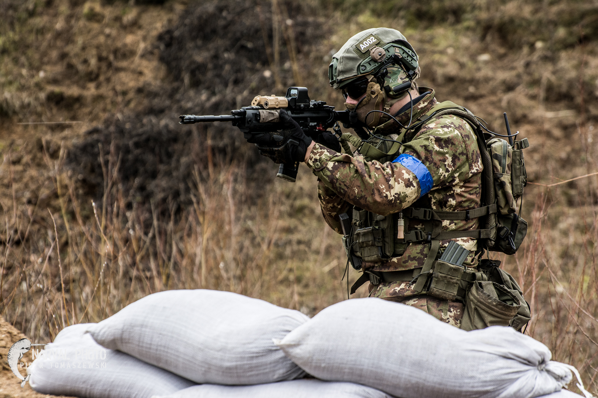
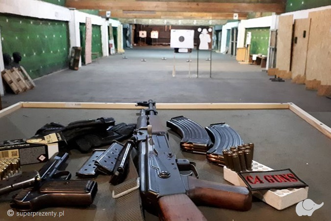